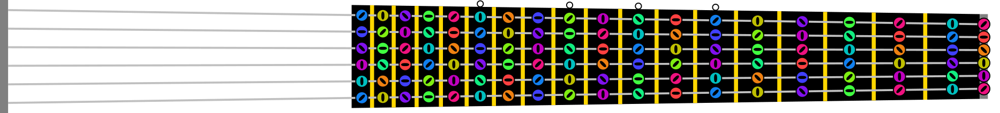

There are a great variety of musical instruments. In many, particular places or parts of the instrument correspond to tones. Decorating these according the coloring scheme gives an intuitive correspondence between the notes and the manner of producing them.
The following is a diagram of the layout of the frets, fretboard, and strings of a guitar
The following is a diagram of the keys of a piano

© David Fraser 2013